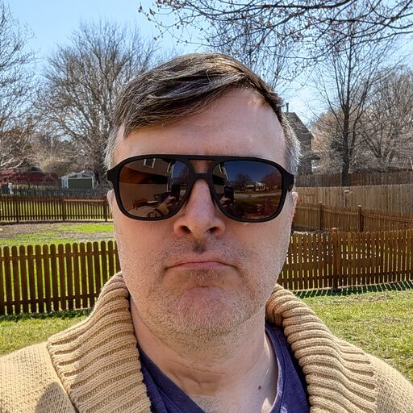

Luke Johannsen
- Network Security Engineer
- Digital Forensics
- Software Development
I work where networks, evidence, and code meet: securing infrastructure, digging into what happened after the fact, and building the tools that make both of those faster.